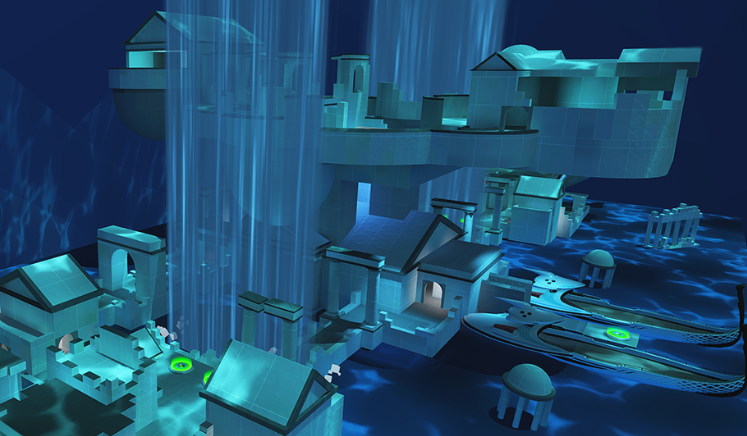

Durante nuestra transmisión en vivo de Twitch Makes Overwatch el diciembre pasado, los desarrolladores se unieron con la comunidad para crear uno de los conceptos más exagerados para un mapa de Overwatch 2.
El gerente senior de desarrollo de la comunidad, Andy Belford; el director artístico, Dion Rogers; y el director del juego, Aaron Keller, siguieron todas sus sugerencias para construir lo que seguramente será un mapa de control único en su clase y una trampa mortal para cualquier héroe de Overwatch. Por fin la comunidad podrá jugar este mapa por tiempo limitado hasta el 2 de mayo.
Surgieron muchas ideas en el chat de la trasmisión en vivo, incluyendo hacer que el mapa fuera una base de Talon bajo el agua a partir de las ruinas de una ciudad acuática. Talantis tiene plataformas de salto y un elevador que les permite a los jugadores elegir hasta cinco formas diferentes de llegar al punto de control. Solo tengan cuidado con el fuego que sale del terreno elevado y de no caer del mapa hacia las aguas de abajo.
Creamos el plano de Talantis en un par de horas durante la transmisión en vivo, así que tendrá un aspecto de “trabajo en curso” que les permitirá ver nuestro proceso de desarrollo. Todos los mapas inician con un “plano” conformado de formas básicas para establecer un estilo de juego y tema general. Para terminar un mapa se necesitan varios meses de desarrollo y colaborar con diferentes equipos. Le agregamos algo de luz temática, muchos peces gigantes y cascadas del domo de la ciudad agujerado como ayuda para crear el ambiente e inspirar su imaginación.
Talantis traerá nuevas y únicas formas de jugar que nunca encontrarán en los mapas que ya lanzamos. Los héroes como Lúcio y Pharah tendrán ventajas únicas para empujar objetivos en casi cualquier lugar del campo de batalla, pero pueden acercarse a ellos con facilidad si usan bien las plataformas de salto para quedar encima. Además, esperen mucho flanqueo, porque los caminos de abajo permiten acceder fácilmente al lado enemigo del campo, y nunca sabrán qué camino tomará el oponente. No se preocupen, tendrán mucho tiempo para probar todos, ya que las tres rondas se llevan a cabo en el mismo punto de control.
Conéctense a Overwatch 2 y échenle un vistazo a Talantis en este modo de juego por tiempo limitado en Arcade o vengan con sus amigos a darse un chapuzón en las partidas personalizadas. No se preocupen, este mapa no aparecerá en No clasificatoria o Juego competitivo. Una vez que termine este evento, Talantis será enviado a la bóveda y es probable que nunca regrese. ¡Gracias a todos por ayudarnos a crear esta experiencia única; esperamos que entren a Talantis hoy!
PAGINA DE INICIO
CRECIMIENTO Y BALANCE DEL LIFEWEAVER